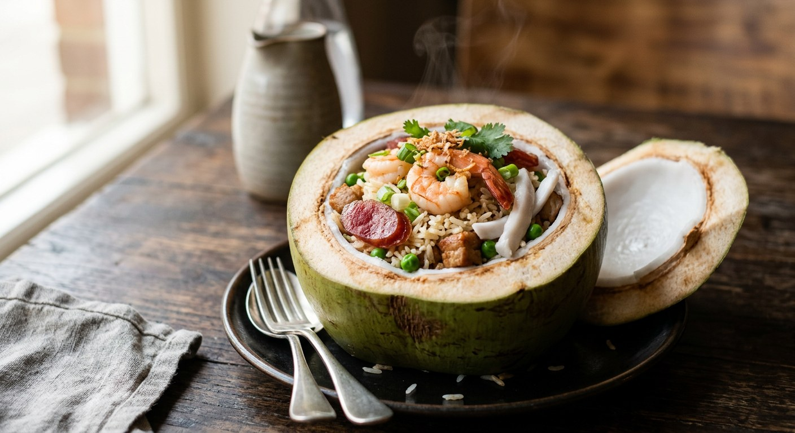

Coconut baked rice — jasmine rice cooked in young coconut water, stir-fried with prawns, pork and Chinese sausage, then baked inside a coconut or casserole until fragrant. The special fried rice of Thai coastal restaurants.

ข้าวอบมะพร้าวอ่อน
Khao op ma praow is the special fried rice of Thailand's coconut-growing coast — jasmine rice cooked in young coconut water, tossed with prawns, pork, Chinese sausage and cubes of tender coconut flesh, then packed back into the coconut shell and baked. It arrives at the table looking like a magic trick: a whole coconut that opens to release a cloud of steam and the smell of toasted rice.
On UK menus it usually sits in the rice section as "coconut rice" or "special fried rice in coconut" — and it is usually a pale imitation, coconut milk dumped into plain rice. The real thing uses the water of the young coconut as the cooking liquid and the flesh as an ingredient, which gives sweetness without heaviness.
| Thai | English | Amount |
|---|---|---|
| ข้าวหอมมะลิ | Jasmine rice, rinsed | 2 cups |
| น้ำมะพร้าวอ่อน | Young coconut water, instead of plain water | 2 cups |
| Thai | English | Amount |
|---|---|---|
| กุ้ง | Prawns, peeled, tails on, deveined | 6-7 |
| เนื้อหมู | Pork, diced small | 1 cup |
| กุนเชียง | Chinese sausage, diced 1cm (optional but traditional) | 1/2 cup |
| กระเทียม | Garlic, finely chopped | 1/2 tbsp |
| หอมใหญ่ | Onion, diced | 1/4 cup |
| เนื้อมะพร้าวอ่อน | Young coconut flesh, cut into bite-size pieces | 1/2 cup |
| ถั่วลันเตา | Frozen peas | 1/4 cup |
| น้ำปลา | Fish sauce | 1 tbsp |
| ไข่ไก่ | Egg, beaten | 1 |
| น้ำมันพืช | Vegetable oil | 2 tbsp |
| Thai | English | Amount |
|---|---|---|
| ต้นหอม ผักชี | Spring onion and coriander | to garnish |
| พริกชี้ฟ้า | Red spur chilli, fine strips, to garnish | 1 |
This is the detail that decides the dish. Young coconut water is light and faintly sweet, so the rice stays separate and perfumed. Coconut milk is fat — the rice turns claggy and the dish becomes pudding-like. The flesh, cut into bite-size pieces, gives bursts of soft sweetness in every spoonful.
The final bake inside the coconut is what fuses the aromas. Covered, at 180°C, for fifteen minutes: the steam carries the coconut scent through every grain, and the rice takes on a light crust where it touches the shell.
This recipe is translated from the following Thai-language sources. Where they disagree, we've said so.
1. Krua.co — khao op ma praow on — https://krua.co
2. Bloggang — khao op ma praow on — https://www.bloggang.com
3. Thai food blog — khao op ma praow on — https://xn--72c1af5bde7ccr1cdbe2wnc.blogspot.com